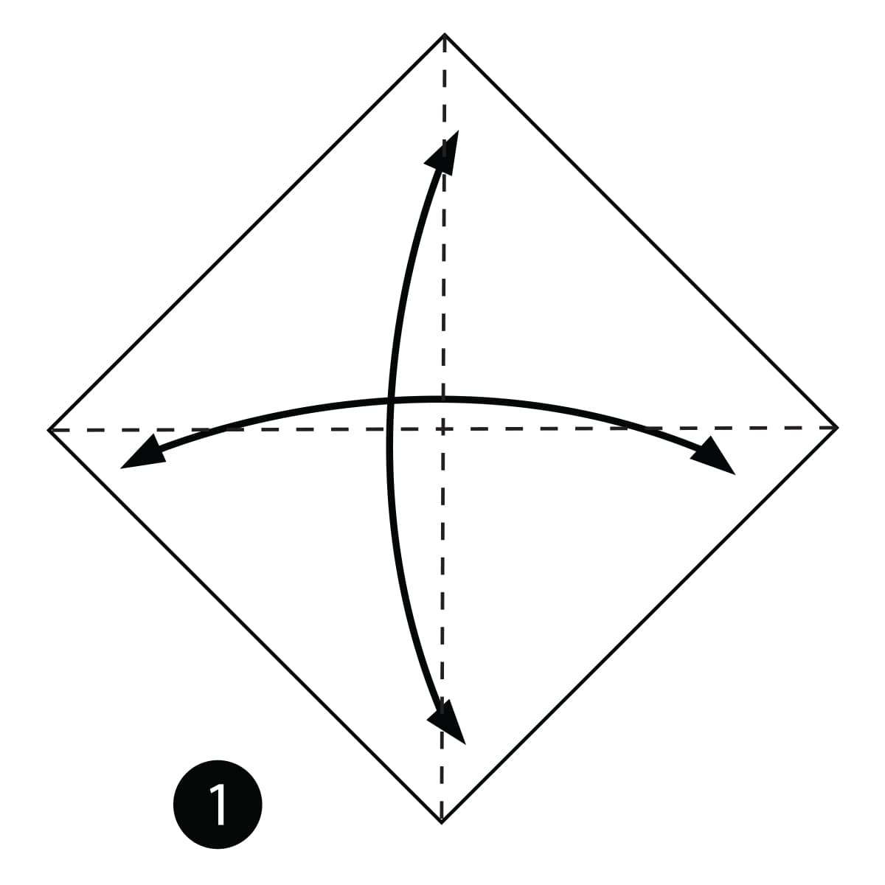
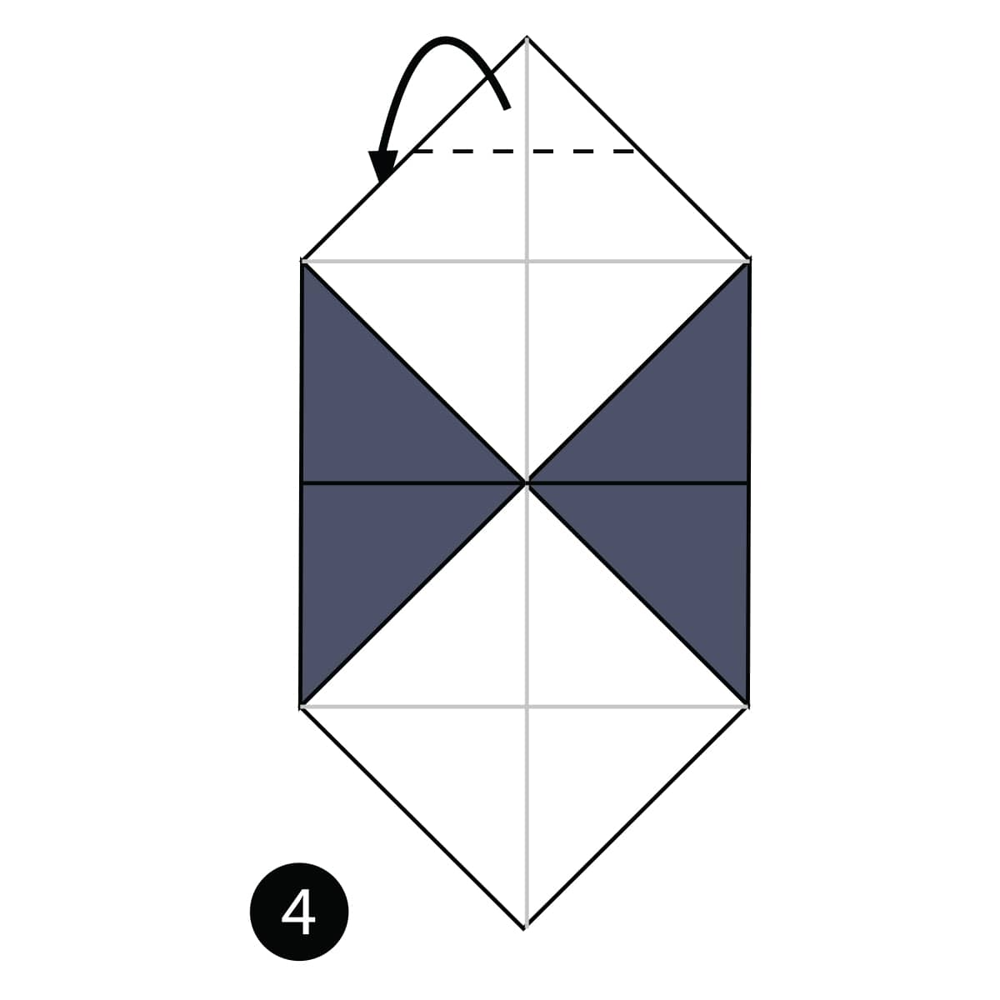

<!DOCTYPE HTML >
<html>


    <title> Panda Creation </title>

        
    <style>


    .grid {

        display:flex;
        flex-wrap:wrap;
        justify-content : space-between;

    }
    .grid img{

        border: 2px solid #000000;
        border-radius:50px;

    }

    p{
        
        text-align:left;
        background-color : #F5F5F5
            
    }
        

        
    body{
        margin: 0px;
        background-color : #F5DEB3
        }
            
    a:link{

        color:red;

    }
    a:visited{

    color:rgb(185, 27, 248);

    }
    a{
        text-decoration: none 
    }
    </style>

</html>


<body>

  
    <p style="color : rgb(184, 179, 156); font-size : 28px; ">The following steps will lead you on how to create your own <b><i>Panda</i></b> </p> 
    
    <div class = "grid">

            <div class = "item">

                <a></a>
                <p>Step 1) Fold and unfold the paper in half <br> both ways</p>

            </div>

            <div class = "item">

                <a></a>
                <p>Step 2) Fold both sides in along the dotted <br> lines.</p>

            </div>

            <div class = "item">

                <a></a>
                <p>Step 3) Fold and unfold the bottom and top <br> along the dotted lines.</p>

            </div>

            <div class = "item">

                <a></a>
                <p>Step 4) Fold the paper behind along the <br> dotted line. </p>

            </div>  

            <div class = "item">

                <a></a>
                <p>Step 5) Turn the paper over.</p>

            </div>    

            <div class = "item">

                <a></a>
                <p>Step 6) Fold the top of the paper down <br> along the dotted line.</p>

            </div>    

            <div class = "item">

                <a></a>
                <p>Step 7) Fold the paper up along the dotted <br> line.</p>

            </div>    

            
            <div class = "item">

                <a></a>
                <p>Step 8) Fold and unfold the paper in half <br> and leave slightly folded to give a 3D look.</p>


            </div>    
            
   

</div>

</body>